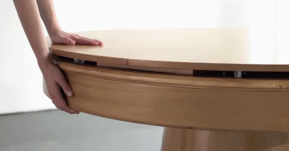

Recruiting Participants for an Online Survey on Household Furniture Needs
How well does the furniture in your home actually fit your life? Our research team studies transformable furniture — furniture that can change its shape or function, such as sofa beds, extendable tables, and wall beds — and we sincerely need your help to understand what people truly need from their home furniture.


We are recruiting participants who are 18 years of age or older and currently live in a home where they use and arrange furniture daily. No design or engineering background is needed — we want to hear about real, everyday experiences.
If you are interested in participating, please fill out a short (8-10 minutes) online survey. Your responses are anonymous. At the end of the survey, you may optionally volunteer for a follow-up interview, compensated separately.
Feel free to contact Junke Zhao (dal516611@utdallas.edu) if you have any questions.
Sincerely,
Junke Zhao
DE4M Lab, The University of Texas at Dallas / For more details on our work, see our lab webpage